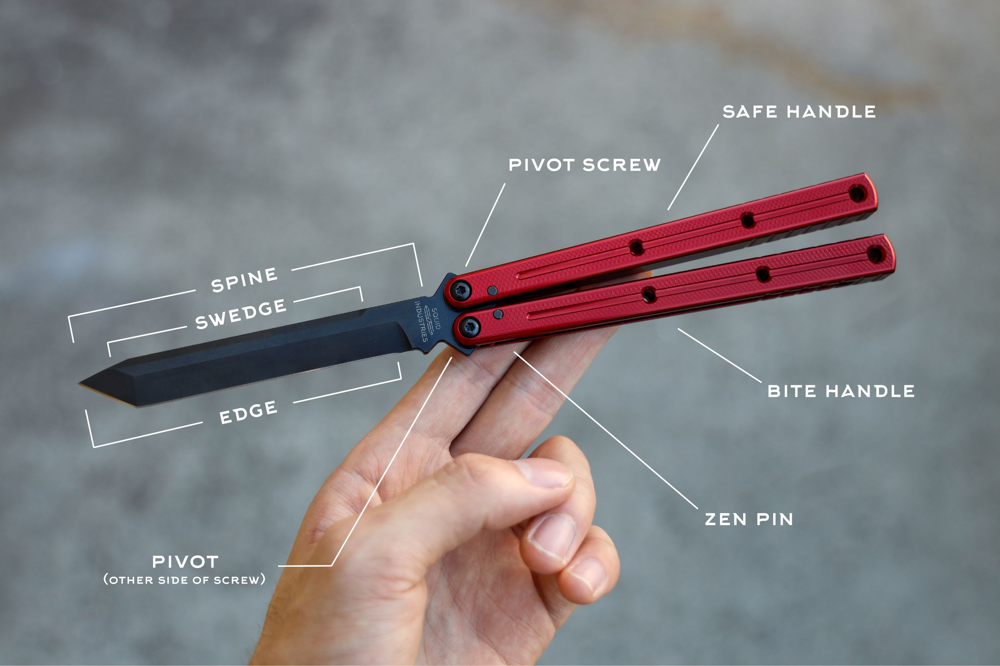

Intrests Ouside of School
I have a bunch of intrests outside of school, but my main two intrests are currently video games and butterfly knife flipping.
A game that I have been playing a lot recently has been Persona 5 Royal. I only started the game recently
and so far Ive had a lot of fun with it. The Persona 5 Royal Official Website
has a bunch of information on the game if you want to learn more.
Flipping a butterfly knife has been a hobby of mine for quite a long time now. I have come a long way since I first started
almost a year ago. It originally started with me wanting a fidget toy. When I got it I learned some basic tricks and because
I have stuck with it for so long now I can do some pretty advanced tricks for example the
helix.
